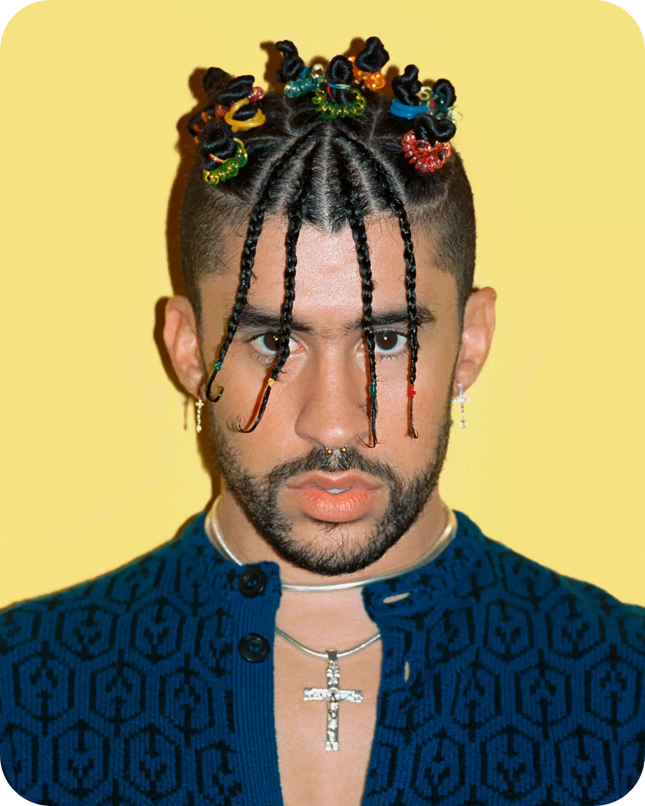

Bad Bunny
- 46M Monthly Listeners
- 45M Followers
Bad Bunny is a young urban music singer, rapper and producer originally from Puerto Rico. This talented artist has demonstrated his already overwhelming power, influence and demand with completely sold-out concerts all over Europe, Latin America and the U.S. Some of his most recognized singles include “Soy Peor," "Diles," "Tu No Metes Cabra," "Chambea" and Mia thats out with Drake. Bad Bunny has had a short but stunning career with colossal amounts of success
Top Song:
- Callaíta
- "Callaíta" is a song by Bad Bunny featuring producer Tainy with samples from Zion's song "Alocate". It was released as a single by Rimas Entertainment on May 31, 2019.
Learn more Other Artists